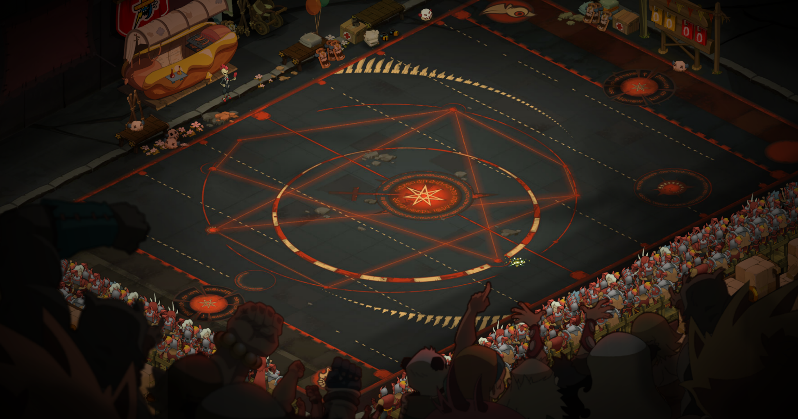
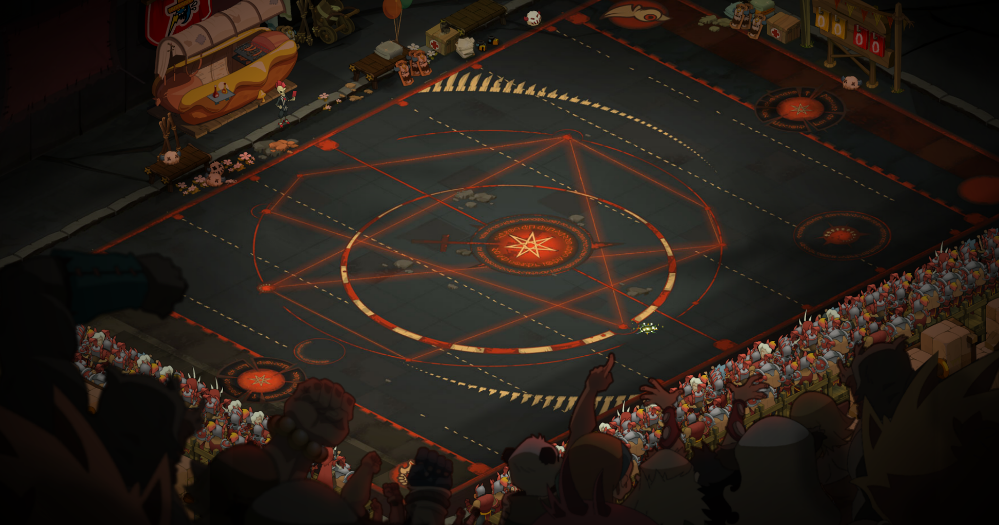
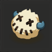
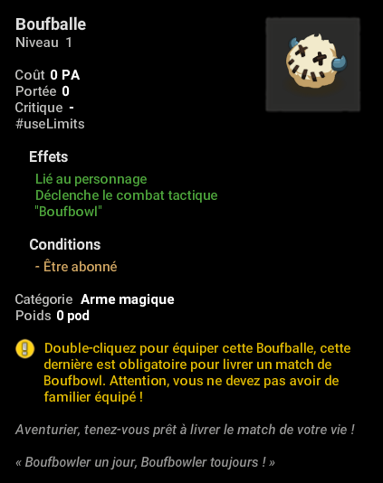

Comment y jouer :
 



- Le Boufbowl est un jeu se pratiquant dans les arènes de Bonta et Brâkmar, sur le terrain à gauche de l'entrée.
- Lorsque vous entrez sur le terrain, vous recevez une Boufballe dans votre inventaire d'équipements.
- Enlevez votre familier ou monture pour l'équiper.
- Puis défiez votre adversaire.
Règles :
- Le jeu se joue en 3v3, 4v4 ou 5v5.
- Si le nombre de joueur dans les deux équipes ne correspond pas ou qu'elles ont moins de 3 joueurs, le combat se termine automatiquement au 2ème tour.
- Au premier tour, les persos invoquent les "Joueurs" sur le terrain et la "Boufballe", puis passent leur tour ainsi que les suivants.
- Dans chaque équipe se trouve :
- 1 Capitaine
- 1 Attaquant (ou 2 en 4v4 et 5v5)
- 1 Défenseur (ou 2 en 5v5)
- Le but du jeu est d'emmener la Boufballe dans le "But" adverse représenté par la ligne de glyphe de chaque côté.
- Chaque Joueur possède 5 sorts, mais le Capitaine possède 1 sort en plus aléatoire parmis 6 sorts de "Triche".
Sorts :
Tous les joueurs peuvent Porter et Jeter la Boufballe
Tous les joueurs peuvent se donner des PM mais le Défenseur peut lancer le sort sur ses alliés
Tous les joueurs ont un sort de "Tacle" pour pousser, et faire passer le tour pour le Défenseur
Et pour finir un sort de déplacement pour le Capitaine et l'Attaquant, et d'entrave pour le Défenseur